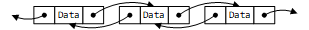
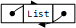

学习
循环链表
- 2018-07-04
- NAke
双向链表
我对这个循环链表的理解是一个节点既有指向前一个元素的指针，又有指向后一个元素的指针。

程序
/*
* @Author: Zheng Qihang
* @Date: 2018-07-03 21:33:00
* @Last Modified by: Zheng Qihang
* @Last Modified time: 2018-07-04 20:51:25
*/
#include <stdlib.h>
#include <stdio.h>
#include <stdint.h>
#include <time.h>
typedef int ElementType; //data type
#define Node ptrNode //Node defination
#define List ptrNode //list defination
typedef struct _Node //node defination
{
ElementType data;
struct _Node *pre;
struct _Node *next;
} * ptrNode; //Node is a pointer to _Node
void logd(const char *c, int d)
{
printf("%s is %d\n", c, d);
}
List MakeEmpty(uint8_t Len, List L)
{
Node tepNode = NULL;
Node last = NULL;
// printf("sizeof(List)=%d sizeof(Node)=%d\n ",sizeof(List),sizeof(Node));
// Test !!! malloc(sizeof(List)) and malloc(sizeof(Node)) does have different
L = (List)malloc(sizeof(struct _Node)); //create a list header!
srand((unsigned int)time(0));
L->data = rand() % 10;
L->next = L;
L->pre = L;
last = L;
while (Len--)
{
tepNode = (Node)malloc(sizeof(struct _Node));
last->next = tepNode;
tepNode->data = rand() % 10;
// logd("tepNode->data", tepNode->data);
tepNode->next = L;
tepNode->pre = last;
last = tepNode;
}
L->pre=last;
return L;
}
int IsEmpty(List L)
{
return (L->next == L->pre);
}
int IsLast(Node P, List L)
{
return (P->next == L);
}
Node Find(ElementType x, List L)
{
Node temnode = L->next;
while (temnode->next != L)
{
if (temnode->data == x)
{
return temnode;
}
temnode = temnode->next;
}
return NULL;
}
void Delete(ElementType x, List L)
{
Node temnode = L->next;
while (temnode->next != L)
{
if (temnode->data == x)
{
temnode->pre->next = temnode->next;
temnode->next->pre = temnode->pre;
printf("delete the %p data is %d\n", temnode, temnode->data);
free(temnode);
return;
}
temnode = temnode->next;
}
printf("delete failed\n");
}
void Insert(ElementType X, List L, Node P)
{
if (P != NULL)
{
Node newNode = (Node)malloc(sizeof(struct _Node));
newNode->data = X;
newNode->pre = P;
newNode->next = P->next;
P->next->pre = newNode;
P->next = newNode;
}
else
{
printf("error:Node is null\n");
}
}
void DeleteList(List L)
{
if (L->next == L)
{
printf("List already empty!\n");
return;
}
// printf("%p\n",L->pre);
// printf("%p\n",L);
// printf("%p\n",L->next);
Node tmpNode = L->pre;
do
{
tmpNode = tmpNode->pre;
free(tmpNode->next);
} while (tmpNode!=L);
tmpNode->next=tmpNode;
tmpNode->pre=tmpNode;
}
void PrintList(List L)
{
Node tep = L->next;
printf("--------------------------------------------------------\n");
printf("| |\n");
for (; tep != L; tep = tep->next)
{
printf("|preaddr=0x%lX addr=0x%lX data=%d nextaddr=0x%lX |\n",
(unsigned long int)tep->pre & 0xFFF, (unsigned long int)tep & 0xFFF,
tep->data, (unsigned long int)tep->next & 0xFFF);
}
printf("| |\n");
printf("--------------------------------------------------------\n");
}
int main(int argc, char const *argv[])
{
int tempint;
List MyList = NULL;
Node pos = NULL;
printf("\n \
循环链表的基本操作：\n \
(a).make new linked list;\n \
(b).check the list is empty;\n \
(c).check the node is list's tail;\n \
(d).find the data in list;\n \
(e).find the data in list and delete it;\n \
(f).Insert the data in List(first need (d));\n \
(g).Delete the all List:\n \
(p).print the all list;\n \
(q).quit;\n \
");
while (1)
{
switch (getchar())
{
case 'a':
printf("please make sure list len:");
scanf("%d", &tempint);
MyList = MakeEmpty((uint8_t)tempint, MyList);
if (MyList != NULL)
{
printf("Make a Len:%d List\n", tempint);
}
break;
case 'b':
if (IsEmpty(MyList))
{
printf("Is Empty!\n");
}
else
{
printf("Isn't Empty!\n");
}
break;
case 'c':
if (IsLast(pos, MyList))
{
printf("Is IsLast!\n");
}
else
{
printf("Isn't IsLast!\n");
}
break;
case 'd':
printf("please tell me which data you need find:");
scanf("%d", &tempint);
pos = Find(tempint, MyList);
printf("find the data in %p\n", pos);
break;
case 'e':
printf("please tell me which data you need delete:");
scanf("%d", &tempint);
Delete(tempint, MyList);
break;
case 'f':
printf("please tell me which data you need Insert:");
scanf("%d", &tempint);
Insert(tempint, MyList, pos);
break;
case 'g':
DeleteList(MyList);
break;
case 'p':
PrintList(MyList);
break;
case 'q':
exit(0);
break;
default:
break;
}
}
return 0;
}